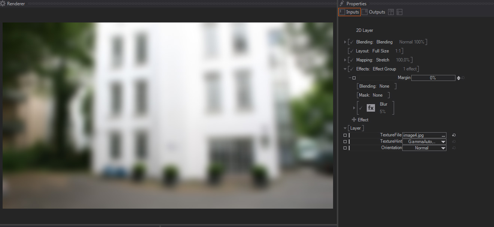
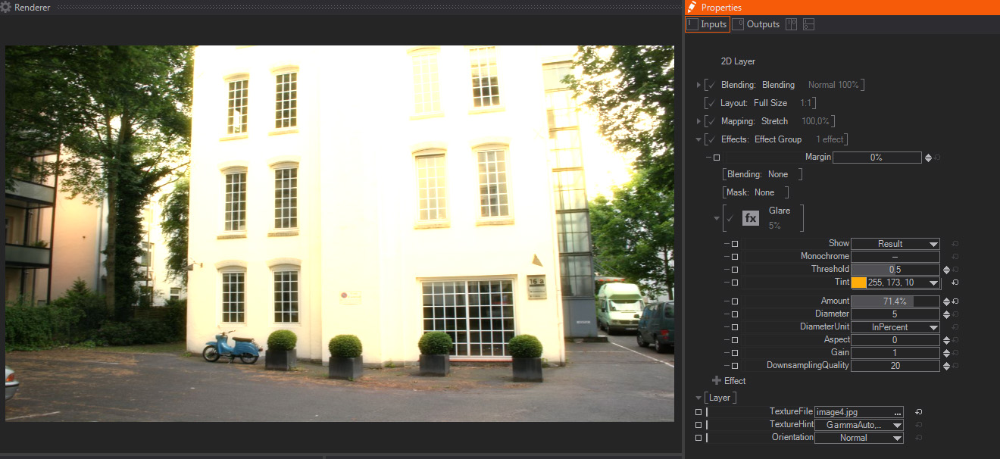
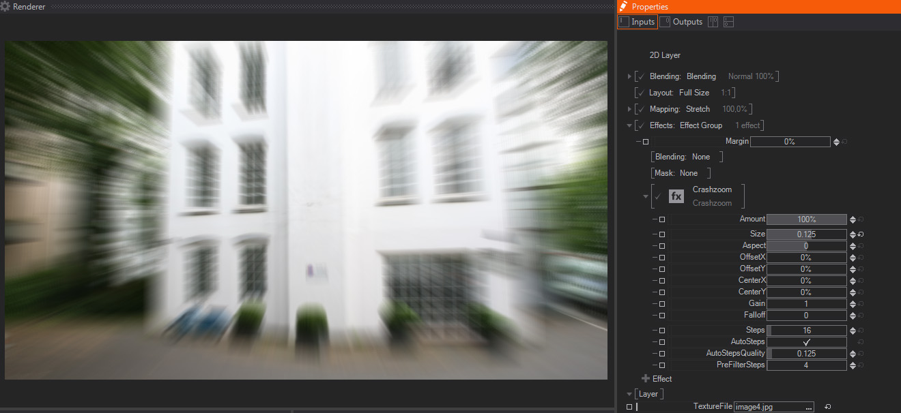
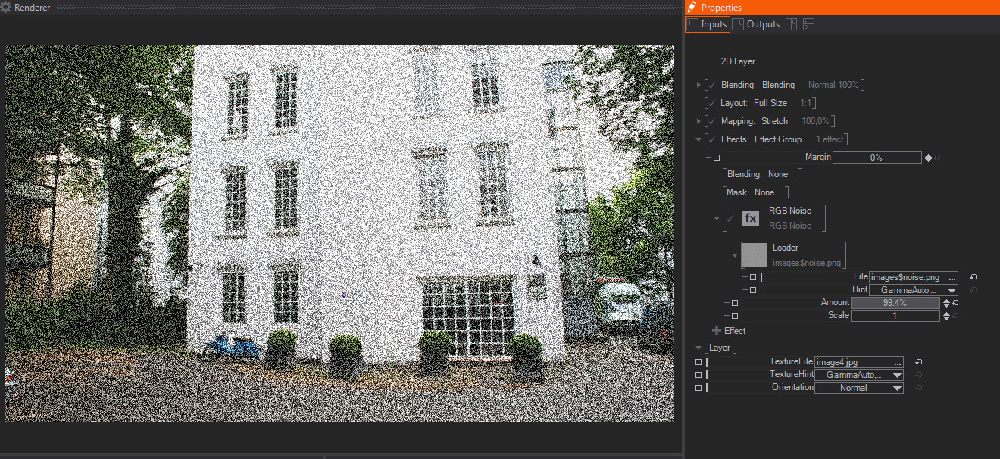
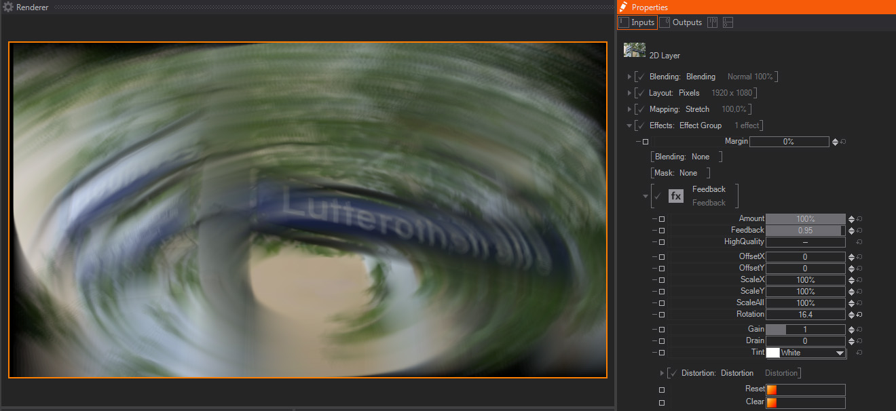
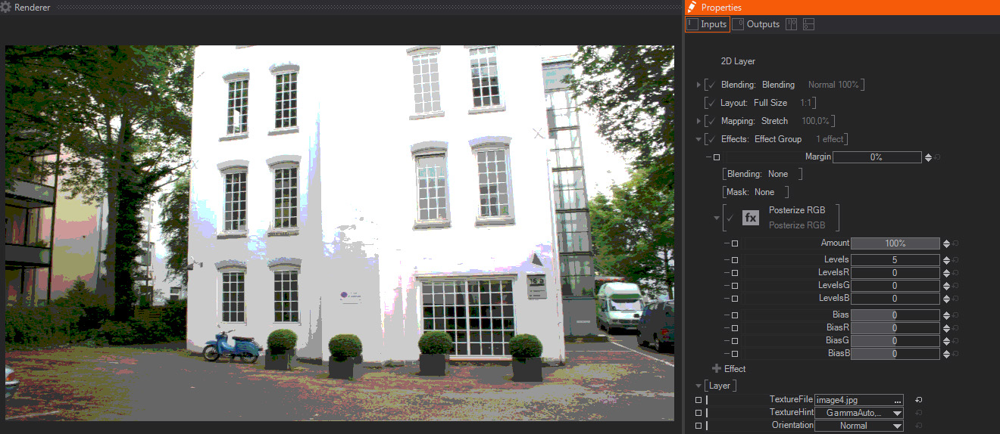
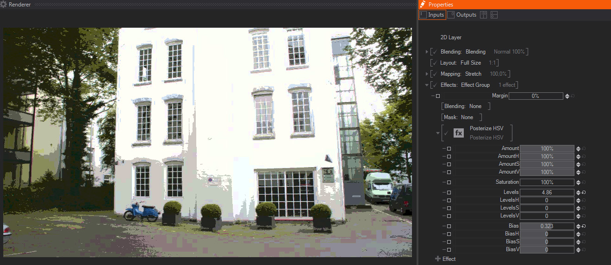
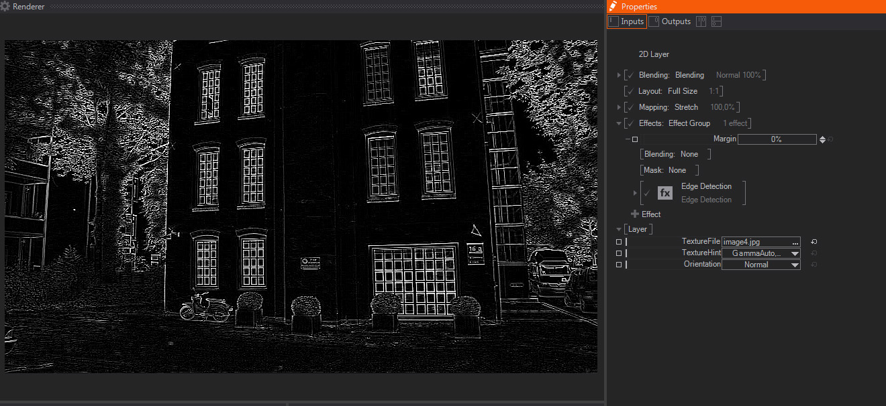
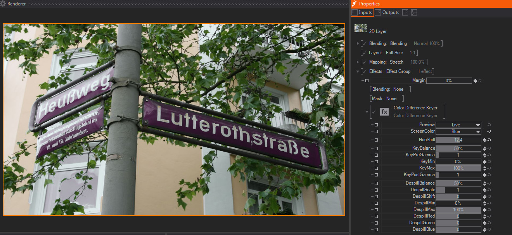

Table of Contents
Ipp Effects: Filters
Mosaic

A mosaic effect that turns the image/Layer into a set of tiles or small rectangles, each one colored with an average of the color values of pixels inside that particular tile. It features these parameters:
- Amount: A slider to control the strength of the mosaic effect. The default 100% value means that the layer will look like a mosaic, as generated by the rest of the parameters available. Smaller values will divide the other mosaic parameters, meaning that smaller values will result in smaller mosaic tiles – this is great for animating the Mosaic effect as a whole.
- Rotation: A slider which rotates the mosaic sampler, therefore other pixels of the layer/image will be used to generate each tile and colors will change accordingly. The default value is 0.
- Scale Unit: A dropdown menu that affects next parameters, by setting the units used to generate the size of the tiles and their translation – offset. The available values are “In Percent” -the default one, using percentage of the whole image size, or “In Pixels” – using absolute pixel values.
- ScaleX/Y: Two sliders to set the size of each tile in X and Y axis, either measured in percentage of total image size or in amount of pixels per tile – as set in parameter above. Their default values are 16.
- OffsetX/Y: Two sliders to control translation of the reticule used to generate each tile in X and Y axis, either measured in percentage of total image size or in number of pixels– as set in parameter above. Their default values are 0.
Blur

This creates a Blur effect, which diffuses the pixel values by averaging with the surrounding pixels. This creates a rough out of focus effect. The parameters available are:
- Amount: A slider to control the strength of the Blur effect. The default 100% value means that the layer will be totally blurred, depending on the rest of the parameters available. Smaller values will divide the other Blur parameters, meaning that smaller values than the default 100% will result in less blurry images – this is great for animating the Blur effect as a whole.]
- Diameter: A slider to control how many pixels are taken into account to generate the Blur effect, the bigger the values the blurrier the image will look, while smaller values will result in an image which looks less blurred. The default value is 5.
- Diameter Unit: A dropdown menu that affects some of the other parameters (Diameter/Aspect and Downsampling), by setting the units used to calculate how much the image is blurred. The available values are “In Percent” -the default one, using percentage of the whole image size, or “In Pixels” – using absolute pixel values.
- Aspect: A multiplier of the blur effect that operates independently on the X and Y axis, negative values will increase blurriness and deform the image in the Y axis, while positive values will stretch and blur the image in the X axis.
- Gain: A slider to perform a Gain color correction on the blurred image, the default value is 1. This gain correction is useful sometimes when trying to create a fake lens defocus, to imitate the crushing of white tones typical of real life defocus.
- Downsampling Quality: A slider which controls the downsampling. In order to improve performance, the system creates a downsampled proxy before applying the Blur effect. The default value is 20.
The higher the values, the less downsampling occurs, the better quality result will have and the more computation time it takes to generate the blur effect. So, in general, it is always good to keep it as low as possible to get results that are good looking but not overly affecting your scene performance.
As a side note, this downsampling control also performs some filter permutation under the hood, so some values, the lower ones in particular, may create some image artifacts.
Glare

A glare effect creates a smooth halo around the brightest areas of your image. It features these parameters:
- Show: A dropdown menu that allows picking of the output of the Glare effect. The options available are:
- Result: The default option, it shows the Glare effect composited over the original Layer/image.
- Mask: It shows the pixels or areas of the image that will be used to create the Glare effect, which will be composited over them. This internal mask is affected by the Threshold parameter below.
- Blurred Mask: Internally the Glare effect is just a Blur effect only affecting certain areas of the image, this option shows how the masked pixels are going to look after applying the Blur effect on them.
- Monochrome: A switch to choose whether the color information will be taken into account to generate the final Glare, or will be considered as a Black & White image, hence looking exactly the same on all color channels. The default value is Off.
- Threshold: A slider to control the amount of bright pixels taken into account to generate the effect mask. In other words, how many the pixels or image areas have to be in order to be affected by the Glare effect.
The default value is 0.5, with smaller values resulting in more and darker pixels being included, and higher values meaning that fewer and the most bright pixels are going to be affected by the Glare – the Mask option of the Show control above is great to see how this parameter effectively chooses which areas are going to be glared. - Amount: A slider to control the strength of the Glare effect. The default 100% value means that the Glare effect will be applied to the layer completely, depending on the rest of the parameters available. Smaller values will divide the other Blur parameters, meaning that smaller values than the default 100% will result in less blurry images – this is great for animating the Blur effect as a whole.
- Diameter: A slider to control how many pixels are blurred to generate the Blurred Mask used to create the Glare effect.
The default value is 5 and, the bigger the values, the blurrier the mask will be, resulting in a smoother Glare effect – the Blurred Mask option of the Show parameter above, is great for checking how this parameter affects the Glare effect. - Diameter Unit: A dropdown menu that affects some of the other parameters (Threshold/Diameter/Aspect and Downsampling), by setting the units used to calculate how much the Glare effect is calculated.
The available values are “In Percent” -the default one, using percentage of the whole image size, or “In Pixels” – using absolute pixel values.
- Aspect: A multiplier of the Glare effect that operates independently on the X and Y axis, negative values will increase Glare effect and deform the image in the Y axis, while positive values wil stretch and glare the image in the X axis.
- Gain: A slider to perform a Gain color correction on the glared areas, the default value is 1.
- Downsampling Quality: A slider which controls the downsampling. In order to improve performance, the system creates a downsampled proxy before applying the Blur effect. The default value is 20.
The higher the values, the less downsampling occurs, the better quality result will have and the more computation time it takes to generate the blur effect. So, in general, it is always good to keep it as low as possible to get results that are good looking but not overly affecting your scene performance.
As a side note, this downsampling control also performs some filter permutation under the hood, so some values, the lower ones in particular, may create some image artifacts.
Crash Zoom

Crash Zoom creates a radial blur, often called "God Rays" or light shards, by blurring image or layer pixels radially from the effect center, as controlled by these available parameters:
- Amount: A slider to control the strength of the Crash Zoom effect. The default 100% value means that the radial Blur effect will be fully applied to the image or layer, as set by the parameters available. Smaller values will divide Crash Zoom parameters, meaning that smaller values will result in less blurry images – this is great for animating the Blur effect as a whole.
- Size: One slider to control the relative size of the copies that will be blended, in order to create the Crash Zoom effect. The amount of these copies is set by the Steps parameters below.
The default value is 0.01, with negative values looking like the rays are emitted inside the image or layer, towards the center, and positive values looking like the rays are emitted outside of the original image or layer. - Aspect: One slider to control the relative size in X and Y axis of the copies that will be blended to create the effect. In other words, the Aspect deforms the radial blur in either the X or Y axis, or both together. The default value is 0.
- Offset X/Y: Two sliders to control the direction of the emission of the copies needed to create the effect.
By changing the Offset X to positive values, the light shards will be displaced to the right hand side, while negative values will displace the blurred areas to the left hand side.
On the other hand, the positive Offset Y values will displace the radial blur direction to the bottom, while negative values will displace the blurred areas to the top of the screen.
Both values are expressed in screen resolution percentage, and their default values are 0%. - Center X/Y: Two sliders to control the center/origin emission of the copies needed to create the effect.
By changing the Center X to positive values for example, the light shards will be starting from the set center/origin.
Both values are expressed in screen resolution percentage, and their default values are 0%. - Gain: One slider to perform a Gain color correction on the blurred areas of the image, this results in boosting bright and white areas of the image or layer. The default value is 1.
- Falloff: One slider to dim the brightness of the copies used to create the effect. It only accepts positive values, the larger they are, the darker the blurry areas will look. The default value is 0.
- Steps: One slider to control how many copies are computed to create the effect. The more copies created, the smoother the effect will look, but the more it will affect performance, so always try to keep a balance between Quality and real time performance - you can check it with the Render Statistics.
In addition, the two parameters below will interact with this one to get a good balance between quality and real time GPU computing. The default value is 16 steps. - Auto Steps: One toggle to control if the software will try to adjust the number of steps, according to the setting below instead of setting them manually with the Steps parameter. The default value is Off, you can check how it affects performance on the Renderer Statistics.
- Auto Steps Quality: One slider that works in combination with the Auto Steps toggle above. When Auto Steps is enabled, it sets the quality level, and therefore the number of intermediate steps generated. The default value is 0.25.
- Pre-Filter Steps: One slider to control the amount of intermediate steps generated in between the number set either by the Auto Steps Quality or by the Steps parameter above. The default value is 4.
RGB Noise

Creates a video noise effect, based on the RGB values of an external image file – this image file is constantly animated to give the impression of dynamic noise. It features these parameters:
- Loader: The eternal image file used as noise generator, by default it is noise.png, which is included in the program installer.
- Amount: A slider to control the strength of the Noise effect. The default value is 10%, with higher values making the noise more noticeable – this is great for animating the RGB Noise effect as a whole.
- Scale: A slider to control the size of the noise image used to perform the effect. The default value is 1, with bigger values resulting in scale interpolation filtering, which causes less contrasted noise but with bigger tiles.
Feedback

The Feedback effect creates a trail effect by blending semi-transparent previous frames with current one. Therefore it works best with animated content. These are the parameters available:
- Amount: A slider to control the strength of the Feedback effect. The default value is 100%, which means that the feedback calculation is performed according to the rest of the parameters available, smaller numbers will act as a multiplier of the other parameters - this is great for animating the Feedback effect as a whole.
- Feedback One slider which controls the weight of the current frame in the effect calculation. the default value is 0.96, which means that
- High Quality: A toggle that switches On or Off the high quality calculation. The default value is Off. Internally it means switching from 10 bits to 16 bits processing for the effect, this reduces some possible rough halo and banding artifacts, which appear especially when using high feedback values, but will also affect performance, so use it with caution.
- Offset X/Y: Two sliders to control the feedback offset in X and Y axis from current frame position, this is useful to create some interesting trail effects. The Offset calculation is also affected by the High Quality toggle above. The default values are 0 for both axis.
- Scale X/Y: Two sliders to control the feedback size in both X and Y axis. The Scale calculation is also affected by the High Quality toggle above. The default values are 0 for both axis.
- Scale All: A sliders to control the feedback size in both X and Y axis together. The Scale calculation is also affected by the High Quality toggle above. The default value is 0.
- Rotation: One slider to control the trail rotation around the effect center, which is also affected by the Offset settings above. The default value is 0, and it is expressed in degrees.
- Gain: One slider to perform a Gain color correction on the trail. The default value is 1.
- Drain: One slider to perform a Lift-like color correction on the trail. The default value is 0.
- Tint: A dropdown menu to choose the color to be applied for tinting the brightest areas of the trail. The default value is White.
- Distortion: A dropdown menu to choose the distortion mode to be applied to the trail. The options available are "None", and "Distortion".
When "Distortion" option is selected new parameters appear:- Loader: A standard File browser control to pick up the image used as distortion map. By default it loads an internal checkerboard image, as shown on the Thumbnail and in File property, which shows the image file path.
If we expand the Loader property a new File option appears, showing the complete path of the mask image file.
- Loader: A standard File browser control to pick up the image used as distortion map. By default it loads an internal checkerboard image, as shown on the Thumbnail and in File property, which shows the image file path.
In addition, if we click on the little arrow close to the Loader, which only appears when the mouse cursor is on this area, another contextual menu appears. This new menu shows Loader presets and additional options:
- Loader: This preset shows a list of internally available mask images. These images are installed with Ventuz installer by default, so they are available for all users and projects. The available options are:
- Loader: Opens a File browser to load a texture.
- Checker: A standard black and white checkerboard image.
- Checker Blue: A blue version of the checkerboard, like the one above but black and blue.
- Checker Dots: Similar to the checkerboard above but using black blurred dots over a white background
- Lines: Thick black blurred horizontal lines.
- Dimple: A dot normal map, normally not very useful for masking but useful for other effects
- Liquid: Another normal map that mimics a liquid displacement, again not very useful as a mask.
- Noise: A static random noise image.
- Texture Property: Texture Property adds an external texture, with 2D layers it even appears as an standard texture node on the Content Editor. There are some default presets available, they are:
- Empty: It creates the Texture Property, but not connected to any image or movie node, by hitting the Texture Dropdown menu, a new menu opens to add a texture, or link it it to any existing one. The options below are shortcuts to connect the Texture Property automatically to any of the texture nodes available.
- Movie Clip: The Texture Property is automatically connected to a Movie Clip node. Please, check the Movie Clip help section for more info.
- Movie Frame: The Texture Property is automatically connected to a Movie Frame node. Please, check the Movie Frame help section for more info.
- Movie Stream: The Texture Property is automatically connected to a Movie Stream node. Please, check the Movie Stream help section for more info.
- Live Video: The Texture Property is automatically connected to a Live Video node. Please, check the Live Video help section for more info.
- Gradient Texture: The Texture Property is automatically connected to the brand new Gradient texture node. Please, check the Gradient Editor help section for more info.
- Texture Loader: The Texture Property is automatically connected to a Texture Loader node. Please, check the Texture Loader help section for more info.
- 1D Gradient: Opens the new Ventuz Gradient Editor to create a Gradient image that will be used as Layer mask. Check the Gradient Editor Section of this User Guide for reference.
- Reset: Triggers a method that re-starts the effect calculation, therefore the trail is deleted and recalculated from current position.
- Clear: Triggers a method that clears the trail created by the effect.
Delay
Delay by a couple of frames.
- Amount: Mix between the delayed image and the original image
- Frames: Number of frames to delay, 15 is the maximum.
When Frames or Amount is zero, the effect is deactivated and all buffers are discarded.
When the effect is re-activated by increasing Frames or Amount, or when the effect is first started, the output is frozen until enough frames are buffered.
PosterizeRGB

Posterization is the effect caused when reducing the dynamic range or amount of color values available, rounding up or down pixel color values. This results in more noticeable transition between color tones - similar to solarized images or banding artifacts.
- Amount: A slider to control the strength of the Posterization effect. The default value is 100%, which means that the image is fully posterized - this is great for animating the Posterize RGB effect as a whole.
- Levels: A slider used to control the amount of colors used to calculate the Posterize effect. The defult value is 5, with higher values resulting in more subtle transition between color tones, while lower values create an image with more abrupt transition between colors.
- LevelsR/G/B: Three sliders to control the color levels available for each RGB channel individually – they work together with the Levels parameter above. Their default values are 0.
- Bias: A slider used to control the distribution of pixels of the same color level in the Posterize effect. The default value is 0, with a range of values from -2 to +2.
- BiasR/G/B: Three sliders to control the distribution of pixels for each RGB channel individually – they work together with the Bias parameter above. Their default values are 0.
Posterize HSV

Posterization is the effect caused when reducing the dynamic range or amount of color values available, rounding up or down pixel color values. This effect creates a Posterize effect similar to the Posterize RGB effect above, but operates based on the HSV (Hue/Saturation/Value) color mode.
- Amount: A slider to control the strength of the Posterization effect. The default value is 100%, which means that the image is fully posterized - this is great for animating the Posterize HSV effect as a whole.
- Amount H/S/V: Three sliders to control the Posterization effect individually depending on the Hue, Saturation and Value of each image pixel. Their default values are 100%.
- Saturation: A slider to control the Saturation, or color intensity, of the Posterized image, with a default value of 100%.
Saturation controls how intense are the color values of an image, the lower the values, the more color values are shifted towards white in the color wheel, and the image colors look less intense. On the contrary, higher saturation values imply moving the color values away from white, resulting in more intense colors, more saturated.
- Levels: A slider used to control the amount of colors used to calculate the Posterize effect. The default value is 5, with higher values resulting in more subtle transition between color tones, while lower values create an image with more abrupt transition between colors.
- LevelsH/S/V: Three sliders to control the color levels depending on the Hue, Saturation and Value of each of the image individual pixels – they work together with the Levels parameter above. Their default values are 0.
- Bias: A slider used to control the distribution of pixels of the same color level in the Posterize effect. The default value is 0, with a range of values from -2 to +2.
- BiasH/S/V: Three sliders to control the distribution of posterized pixels depending on the Hue, Saturation and Value of each of the individual pixels in the original image – they work together with the Bias parameter above. Their default values are 0.
Edge Detection

Edge detection effect detects the outline of shapes in the image or Layer. In order to detect this lines, it filters the image to create a high contrast image showing the edges in white and the rest of the image as black pixels.
- Amount: A slider to control the strength of the Edge Detection effect. The default value is 100%, which means that the result shows Edge Detection effect applied, while smaller values act as a multiplier/divider of the edge detection parameters - this is great for animating the Edge Detection effect as a whole.
- Foreground: One slider to control the amount of shapes or features in the image that will be considered as Edges, and therefore appearing as white.
- Background: One slider to control blending between the original image and the Edge Detection result – hence increases the background original image presence in the result. The default value is 0, with higher values adding more pixel values from the original image.
- AllDirections: A Slider which interacts with the one below, it controls how the edge detection is performed. The default value of 100% computes the edge detection algorithm in all directions, while a 0% value means that the direction slider below controls the edge detection matrix completely. Intermediate levels blend both edge detection matrices, so the result is a mixture of both of them.
- Direction: A slider which rotates the direction used by the edge detection matrix, values are expressed in degrees and the default value is 0.
As mentioned before, it works together with the All Directions control above,and it is only fully operational when All Directions is turned to 0%
- Channel: A dropdown menu to choose which image channel is used to perform the Edge Detection operation.
The default value is Luma, which uses the image Luminance or Brightness information, and the other options available are Red, Green, Blue and Alpha.
- Tint: A dropdown menu to select the color used to tint the detected edges generated by this effect, it does not affect the amount of the original image selected by the Background parameter above. The default is White.
Color Difference Keyer

- Preview: A drop-down menu used select the image to be shown as the effect output, these are the available option with a brief explanation, the default one is Live.
- Live: This option shows the final composite, that is, the subject in front of the green/bluescreen premultiplied by the mask created with the rest of parameters and the despill operations applied on top. That is, the final result of the keying effect.
- Input: This option shows just the untouched effect input, and normally is used to check the original material quality an the reasons for certain artifacts in the final key.
- Despilled: Despill operation takes out all the color bouncing from the green/blue back groun on top of the foreground object. That is, the typical green/blue fringe, noticeable especially on the edges of the foreground. Therefore, this option shows the foreground object with the despill operation applied to it.
- Key: This shows the resulting key generated with the current parameters applied. The key shows the Alpha channel generated as a grayscale image, so you don't have to switch on the Alpha preview in the Renderer window.
- DespillMask: In the same fashion we pull a key with the parameters below, another key is created internally to isolate the areas where the despill operation will be performed. This option shows the alpha channel indicating the image areas that will be affected by the despill parameters.
- ScreenColor: This drop-down menu allows selecting the background base color. Even when green and blue are the most usual colors, sometimes Red can be used for foreground objects which have lots of green and blue areas. For the scope of this documentation we will mostly focus in the greenscreen/bluescreen scenarios, but all the parameters and principles apply to the redscreens too.
Therefore, the options available are pretty obvious: Green, Blue and Red, with Green being the default one.
- HueShift: One slider that controls the color variations or nuances from the base color selected in ScreenColor. In real life production is very unlikely that the green/blue background is perfectly green or blue. Therefore, you can use this parameter to shift from the base color and get closer to your real life color.
The next parameters work mainly by tweaking the generated key alpha channel, that is, they perform operations to adjust key density, contrast and the like. Therefore, in order to check the results properly, it is strongly suggested that you switch the output in Preview to Key.
Next are the key or matte tweaking parameters:
- KeyBalance: One slider that controls the balance between the non-key components of the input. Assuming green-screen, the red and blue channels are compared to the green channel with equal effect when Balance is set to 0.5. Changing Balance toward 0.0 will reduce the influence of the blue channel, changing it towards 1.0 will reduce the influence of the red channel. Values are expressed as float an default value is 0.5.
- KeyPreGamma: One slider used to perform a Gamma color correction in the resulting mask. As all Gamma corrections it will affect mainly the midtones of the mask, and it is applied before the more aggressive corrections below, specially Min and Max that will compress mask dynamic range. Values are expressed as float and the default value is 1.
- KeyMin: One slider used to clamp the darker values of the key generated in the effect- it sets the black level of the resulting mask, therefore increasing its value will compress the darker areas of the mask and increase matte contrast and blacks density. It is better that you switch Preview to Key mode to see its effect. Values are expressed as percentage and the default value is 0%.
- KeyMax: One slider used to clamp the lighter values of the key generated in the effect- it sets the white level of the resulting mask, therefore decreasing its value will compress the whiter areas of the mask and increase matte contrast and whites density. It is better that you switch Preview to Key mode to see its effect. Values are expressed as percentage and the default value is 100%.
- KeyPostGamma:One slider used to perform a Gamma color correction in the resulting mask. As all Gamma corrections it will affect mainly the midtones of the mask, and it is applied after the other mask color corrections above, therefore it changes contrast within the range we previously set with Max and Min. Values are expressed as float and the default value is 1.
The next parameters are used to adjust the despill, the foreground areas that are contaminated by background color bouncing on top of the foreground object. Therefore, in order to check the results properly, it is strongly suggested that you switch the output in Preview to either Despilled or DespillMask options.
Next come the despill or despill-matte tweaking parameters:
- DespillBalance: One slider that controls the balance between the non-key components of the despill matte. In a greenscreen scenario, it will increase the blue channel influence, moving slider towards 1.0; or will increase red channele influence, when moving the slider towards 0.0. Values are expressed as float an default value is 0.5.
- DespillScale: One slider that controls a brightness color correction on the despill areas. This is often very useful with Greenscreens, because key pulling techniques tend to darken the foreground areas. The values are expressed as Float and the default value is 1, meaning no brightness correction has been made.
- DespillShift: One slider that controls a contrast color correction on the despill areas. This is often very useful with Greenscreens, because key pulling techniques tend to darken the foreground areas. The values are expressed as Float and the default value is 1, meaning no brightness correction has been made.
- DespillMin: One slider used to clamp the DespillMask darker values - it sets the black level of the DespillMask, therefore increasing its value will compress the darker areas of the mask that controls where the Despill operations will be applied. It is better that you switch Preview to DespillMask mode to see its effect. Values are expressed as percentage and the default value is 0%.
- DespillMax: One slider used to clamp the DespillMask lighter values - it sets the white level of the DespillMask, therefore decreasing its value will compress the whiter areas of the mask that controls where the Despill operations will be applied. It is better that you switch Preview to DespillMask mode to see its effect. Values are expressed as percentage and the default value is 100%.
- DespillRed: One slider that controls the color correction applied on the Red channel to take spill out. Values are expressed as float and the default value is 0.
- DespillGreen: One slider that controls the color correction applied on the Green channel to take spill out. Values are expressed as float and the default value is 0.
- DespillBlue: One slider that controls the color correction applied on the Blue channel to take spill out. Values are expressed as float and the default value is 0.
The next group of parameters are used to quickly crop the original image, this is often very useful to take out areas
- CropLeft: One slider that crops the image starting from the picture left edge. Values are expressed as percentage and the default value is 0%.
- CropRight: One slider that crops the image starting from the picture right edge. Values are expressed as percentage and the default value is 0%.
- CropTop: One slider that crops the image starting from the picture top edge. Values are expressed as percentage and the default value is 0%.
- CropBottom: (CropBottom) One slider that crops the image starting from the picture bottom edge. Values are expressed as percentage and the default value is 0%.